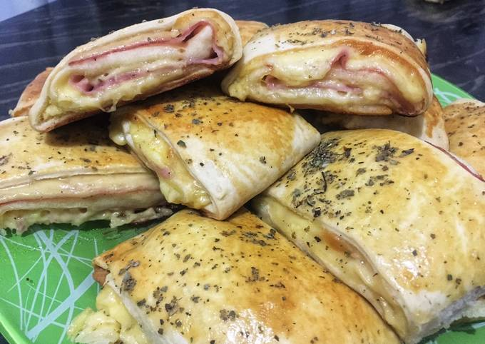

Veja mais Lanches

Cachorro quente

Bauru de Forno

 Ta fácil
Ta fácil
 30min
30min
Apresentamos o Cachorro Quente Gourmet, uma reinvenção sofisticada e deliciosa do clássico favorito que todos conhecemos e amamos. Prepare-se para uma explosão de sabores e texturas que vão elevar sua percepção do tradicional cachorro quente.
A primeira versão do hot dog surgiu há muitos séculos, em meados de 1500 a.c., quando os babilônios passaram a comer salsicha com pão, mas a popularidade do lanche é devida aos alemães que, em 1850, começaram a chamar o pão com salsicha de hot dog devido ao cachorro de estimação de um cozinheiro de Frankfurt.